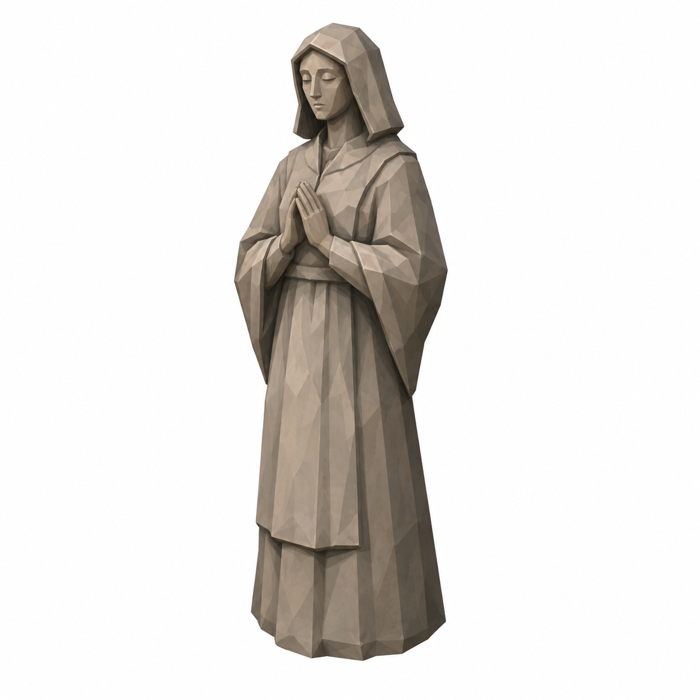
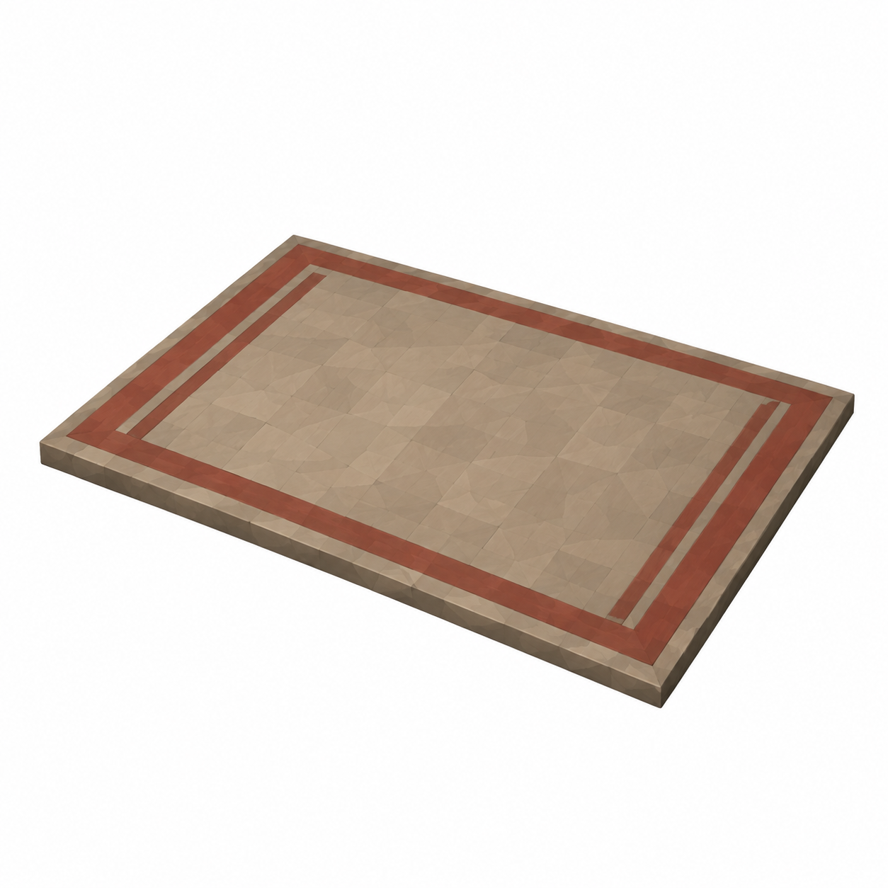
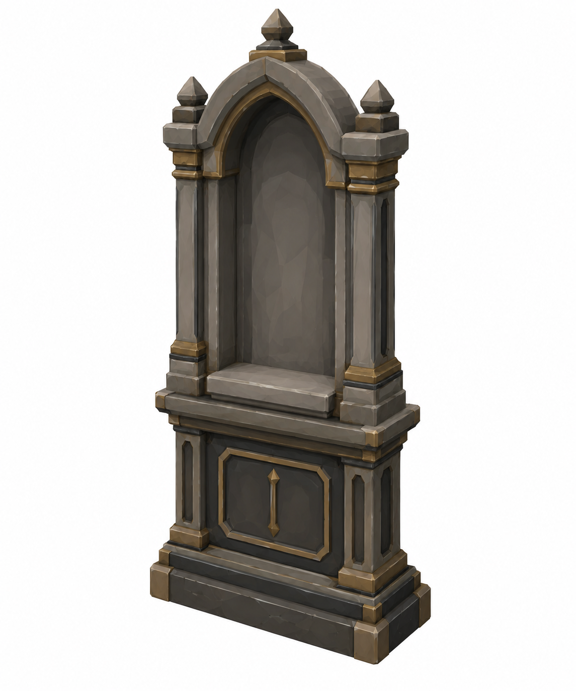
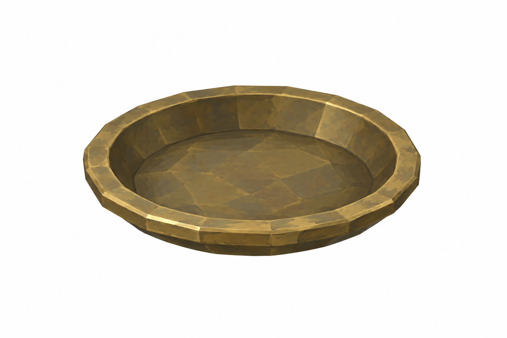
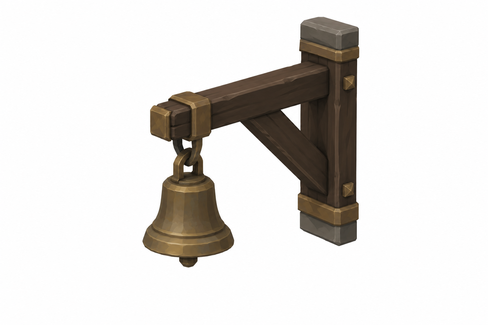
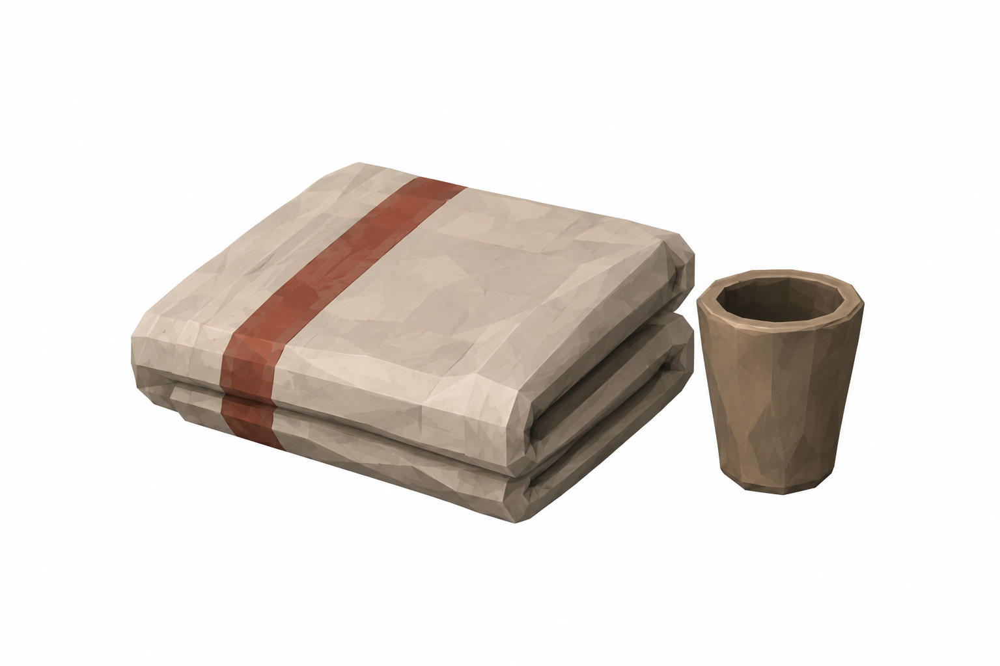

Görseller tasarım referansıdır. Ölçüler hedef sayılarıdır; raster oranları yaklaşık, gerçek mesh/Unity fit doğrulanmadı. Tripo'ya geçilmedi. Git/Jira gönderimi bu taslak için yapılmadı.
Ortak heykel / durum

Önceden onaylı heykel korunur;150/332tek master eşleşmesi nihai onay bekliyor. Yeni heykel üretilmedi.Cold tamamen sönük
Lit sıcak ışık / flame renderer
Prayed / cooldown: prompt only
Oil lamp ortak BRAV156. Heykel0.75m, kneelingmat0.8×0.55m. Duvar kesilmez; Ward1bir2.3m bedbay kullanır.
Ortak lamba ve korunan mat
 BRAV156 ortak oil lamp; Ø0.12 ×0.07 m · unlit.
BRAV156 ortak oil lamp; Ø0.12 ×0.07 m · unlit.
Korunan mat · hedef0.8 ×0.55 m · exact fit pending.Tekil45° referanslar

Tabernacle · 1.2 × 0.45 × 2.4 m; sill 0.78; niche0.6 ×0.2 ×0.95Style/semantic review completed; exact proportions and mesh fit remain unverified.
HearthDish · Ø0.25 mStyle/semantic review completed; exact proportions and mesh fit remain unverified.
SanctusBell · Ø0.15 mStyle/semantic review completed; exact proportions and mesh fit remain unverified.
Offerings · blanket0.36×0.30; cupØ0.07Style/semantic review completed; exact proportions and mesh fit remain unverified.